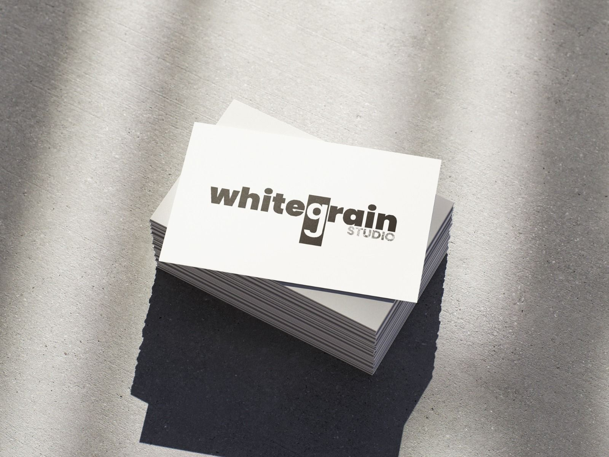

Studio e pavarur e dizajnit
Tiranë, Shqipëri
Identitete vizuale.
Hapësira me karakter.
Dizajn grafik, branding dhe koncepte interieri.
Nga Klea, në Tiranë.

White Grain — Identiteti ynë01 / Punime të përzgjedhura
2024 — 2025Punime të përzgjedhura.
Nuk u gjet asnjë projekt. Provo një emër tjetër ose ndrysho kategorinë.
02 / Pas studios
Një studio.
Shumë ide.
White Grain është studioja e Kleas — një praktikë krijuese mes dizajnit grafik dhe interierit.
Nga një shenjë në letër te një hapësirë në tre dimensione, çdo projekt nis me të njëjtën kureshtje: si mund të marrë formë një ide?
Me formim në art dhe dizajn në POLIS, bashkoj kërkimin vizual, tipografinë dhe materialet për t’u dhënë ideve një gjuhë të vetën.
Brenda botës sonëÇfarë krijojmë
Identitete vizuale
Logo, tipografi, sisteme grafike & print.
Koncepte hapësinore
Interier, modelim 3D & studime materialesh.
Drejtim artistik
Koncept, kompozim & prezantim vizual.
03 / Mënyra jonë
Nga biseda e parë,
te detaji i fundit.
- 01 — Zbulojmë
Fillojmë me një pyetje.
Dëgjojmë idenë, njohim kontekstin dhe kërkojmë drejtimin që i përshtatet projektit.
- 02 — Eksplorojmë
I japim formë idesë.
Skica, materiale dhe eksperimente vizuale. Provojmë, diskutojmë dhe përpunojmë.
- 03 — Realizojmë
Çdo detaj në vendin e vet.
Zhvillojmë drejtimin e zgjedhur dhe përgatisim materialet për përdorimin e tyre.
Ke një ide në mendje?
Le ta zhvillojmë bashkë.Projekti yt
nis këtu.
Na trego çfarë ke në mendje. Një identitet i ri, një hapësirë apo një ide që kërkon formë — le ta diskutojmë.
Preferon email direkt?